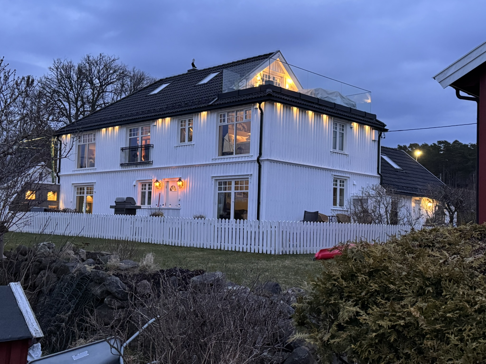
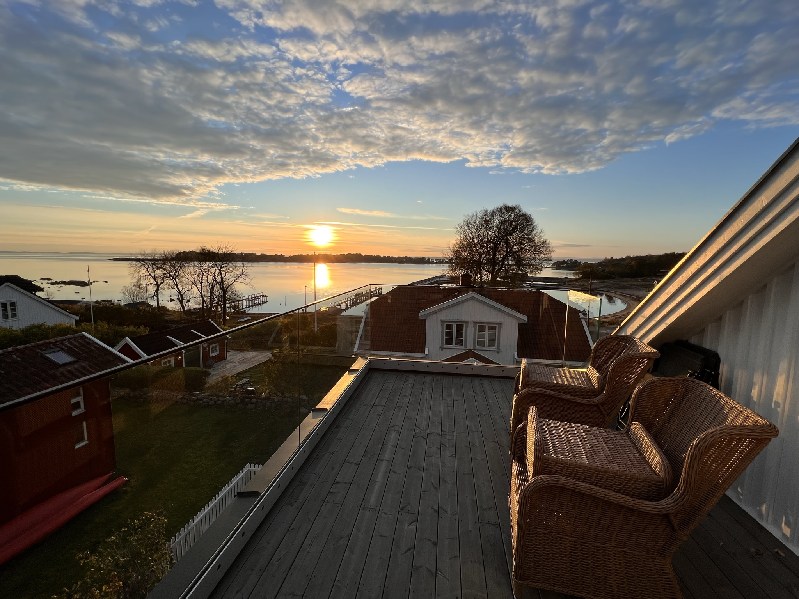
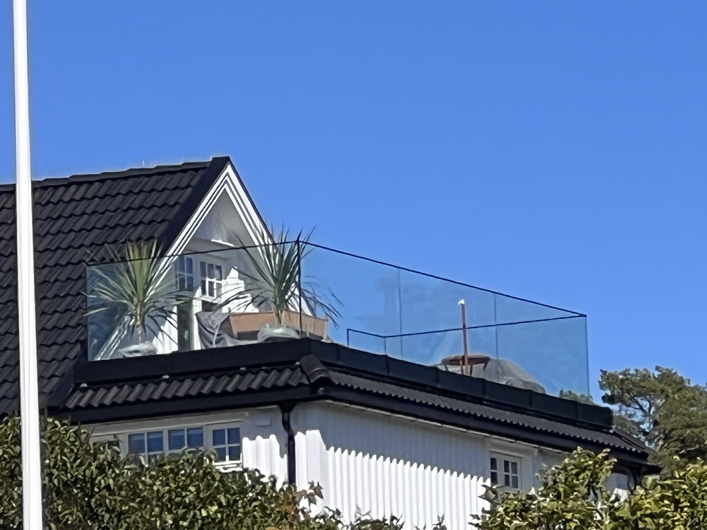
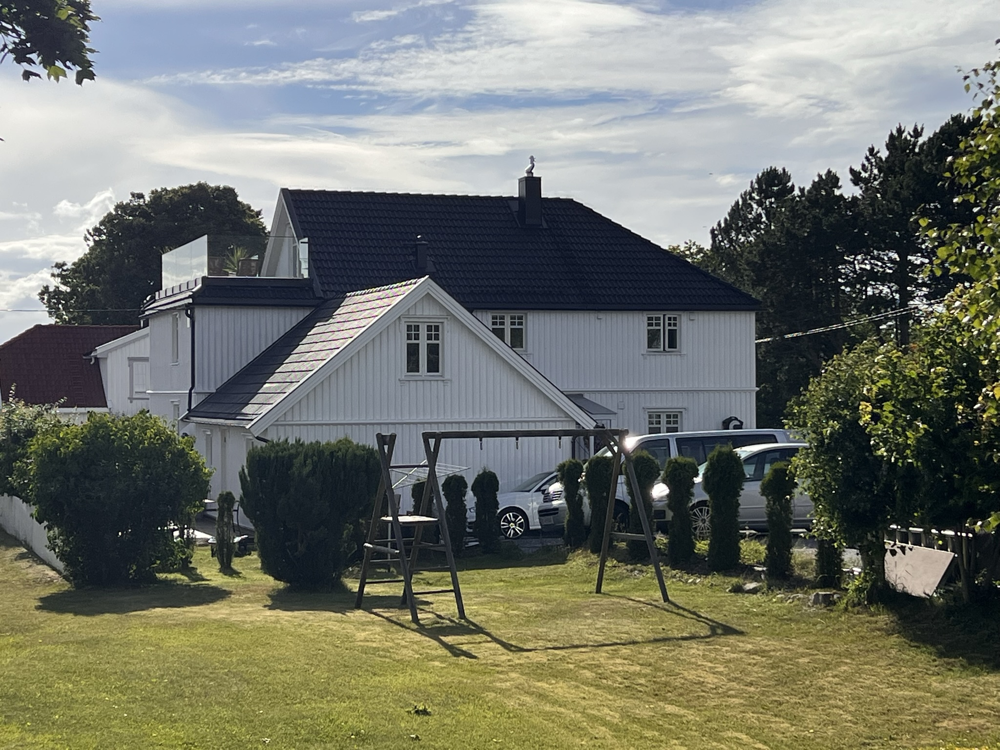

Flate tak
Komplette membranløsninger for nye og eksisterende tak.
MEMBRANSPESIALIST
Presist membranarbeid på flate tak, terrasser og detaljer – utført med faglig stolthet og dokumentert kvalitet.
Riktig utført fra starten
Hos Taktekkern møter du en membranspesialist som tar ansvar for hele jobben – fra befaring og materialvalg til ferdig tekking og ryddig dokumentasjon.
Les om Taktekkern ↗Tjenester
Trygge løsninger tilpasset bygget, underlaget og bruken.
Komplette membranløsninger for nye og eksisterende tak.
Tette, slitesterke flater med gjennomtenkte avslutninger.
Sluk, gjennomføringer, parapeter og alle de viktige overgangene.
Effektiv feilsøking og målrettet utbedring når taket trenger det.
Kontroll og vedlikehold som forlenger levetiden på membranen.
Faglig rådgivning om løsninger, materialvalg og viktige detaljer før du setter i gang.
Utvalgt prosjekt
Membrantak, takterrasse og detaljer i ett gjennomført prosjekt. En klassisk bolig fikk et nytt uterom med plass til utsikt, gode kvelder og mange år med trygge løsninger.
TAKTERRASSE · MEMBRAN · DETALJER



ET HELHETLIG PROSJEKTFra den første detaljen til kvelder på terrassen – et resultat å være stolt av.
Dokumentert kvalitet
Vi dokumenterer arbeidet underveis, slik at du har oversikt over materialvalg, utførelse og viktige detaljer – også lenge etter at jobben er ferdig.
Om Taktekkern
Taktekkern er bygget på en enkel idé: Membranarbeid skal gjøres skikkelig. Det betyr å se hele løsningen, være nøye med detaljene og levere et tak kunden kan stole på.
Vi jobber med både små og store oppdrag og legger like stor stolthet i en krevende reparasjon som i en komplett nytekking.
Ta kontakt
Fortell kort om prosjektet ditt, så tar vi kontakt for en uforpliktende prat eller befaring.
Kontaktinformasjon og skjema tilpasses før publisering.